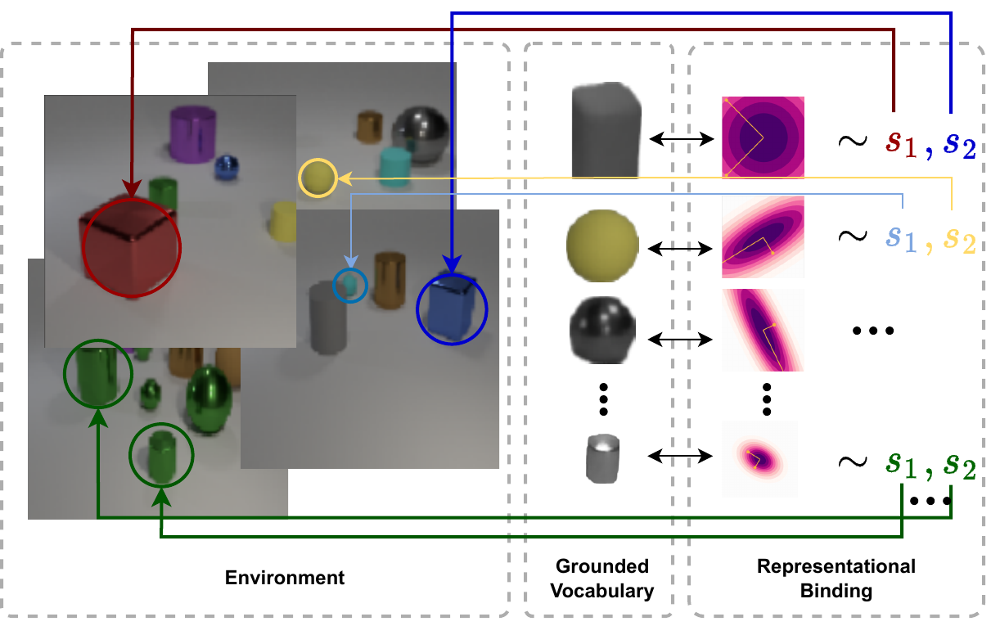
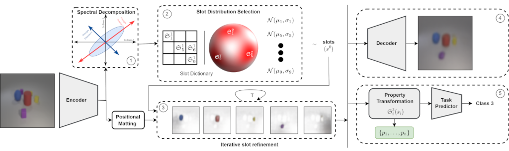
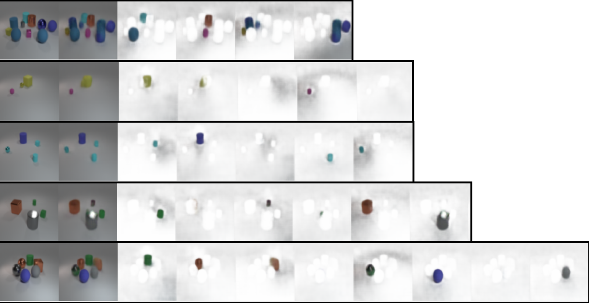
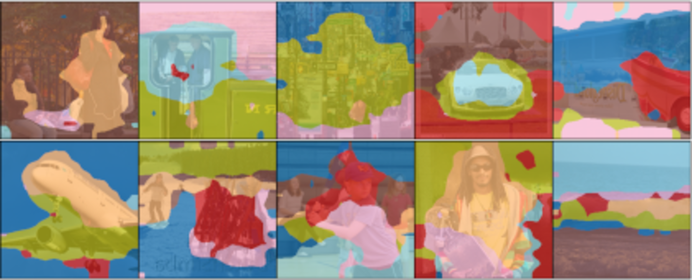

Grounded Object-Centric Learning
Conditional Slot Attention learns a grounded dictionary of object types, so slots specialise, stay invariant to identity-preserving changes, and the scene decides how many slots it needs
Slot Attention learns object-centric representations by assigning objects to slots, but draws every slot from a single shared distribution — so slots stay interchangeable and cannot specialise to particular object types. Conditional Slot Attention (CoSA) replaces that single prior with a Grounded Slot Dictionary (GSD): a vector-quantized codebook of canonical, object-level property vectors, each paired with its own learned Gaussian prior over slots. A spectral-decomposition step lets each scene dynamically choose how many slots it needs. The result is grounded, specialised slots that support scene generation, slot composition, and few-shot task adaptation, while staying competitive with Slot Attention on object-discovery benchmarks and saving up to 38% of inference FLOPs.
The grounding and binding problems
Much of object-centric representation learning rests on two longstanding questions. The grounding problem (Harnad 1990) is the challenge of connecting a representation to a real object, its function and its meaning — which the paper reframes as learning abstract, canonical representations of object types. The binding problem (Greff et al. 2020) is the challenge of combining objects into a single coherent context. (Greff et al. 2020) split binding into three sub-tasks: segregation (forming modular object representations from raw input), representation (holding several objects in a common format without interference), and compositionality (relating and composing them without corrupting the constituents).
Slot Attention (SA) (Locatello et al. 2020) made strong progress on unsupervised object discovery using an iterative attention mechanism that assigns objects to slots. But SA presupposes a single distribution from which all slots are randomly initialised. This paper focuses on what Treisman (1999) calls a prerequisite for human-like binding: tying temporary object representations to their permanent object types — which the authors cast as learning a vocabulary of grounded, canonical object representations.

Conditional Slot Attention
The proposed method, Conditional Slot Attention (CoSA), is an unsupervised autoencoder framework built around a Grounded Slot Dictionary (GSD) inspired by vector quantization (Van Den Oord et al. 2017). The full pipeline is composed of five sub-modules.

Abstraction: how many slots does this scene need?
Rather than fixing the slot count K ahead of time, CoSA estimates it per scene. Given encoded features \mathbf{z} = \Phi_e(\mathbf{x}) \in \mathbb{R}^{N \times d_z}, it forms the latent covariance \mathbf{C} = \mathbf{z}\,\mathbf{z}^\top and takes its spectral decomposition \mathbf{C} = \mathbf{V}\Lambda\mathbf{V}^\top. Eigenvalues are large when a single object spans many embeddings, or when a scene repeats the same object. Taking the largest non-background eigenvalue \lambda_s as the area of the “largest” object, the number of slots is estimated as
K = 1 + \sum_{i=2}^{\tilde{N}} \left\lceil \lfloor \lambda_i \rfloor / \lambda_s \right\rceil,
a ratio that counts object instances relative to that largest object.
The Grounded Slot Dictionary
The GSD \mathfrak{S} = \{(\mathfrak{S}^1_i, \mathfrak{S}^2_i)\}_{i=1}^{M} pairs two things for each of M object types: a codebook of canonical object-level property vectors \mathfrak{S}^1, and a set of slot prior distributions \mathfrak{S}^2_i = \mathcal{N}(\mathbf{s}^0_i; \boldsymbol{\mu}_i, \boldsymbol{\sigma}^2_i) with learned diagonal-covariance parameters. The abstracted representation is quantized to its nearest codebook entries,
\tilde{\mathbf{z}} = \arg\min_{\mathfrak{S}^1_i \in \mathfrak{S}^1} \hat{d}\!\left(\mathcal{A}(\mathbf{z}), \mathfrak{S}^1_i\right),
under a distance \hat{d}(\cdot,\cdot) — the paper studies Euclidean, cosine, and gumbel sampling strategies for this quantization. Crucially, the indices of the matched codebook vectors select which slot priors to sample initial slots from; the sampling is not conditioned on the codebook values themselves. Those initial slots \mathbf{s}^0 are then refined by standard slot attention into the final slots \mathbf{s}^T.
The model is trained by maximising an evidence lower bound on the marginal log-likelihood of the image,
\log p(\mathbf{x}) \geq \mathbb{E}_{\tilde{\mathbf{z}} \sim q(\tilde{\mathbf{z}}\mid\mathbf{x}),\, \mathbf{s}^0 \sim p(\mathbf{s}^0\mid\tilde{\mathbf{z}})} \left[\log p(\mathbf{x}\mid\mathbf{s})\right] - D_{\mathrm{KL}}\!\left(q(\tilde{\mathbf{z}}\mid\mathbf{x}) \,\|\, p(\tilde{\mathbf{z}})\right),
with an analogous bound on \log p(\mathbf{y}\mid\mathbf{x}) for the reasoning tasks, where the slots produce a rationale behind each rule-based class prediction.
Object discovery and composition
CoSA stays competitive with Slot Attention and recent variants on object-discovery benchmarks, measured by foreground-Adjusted Rand Index (ARI), and improves on real-world COCO using a DINOSAUR-style backbone (Seitzer et al. 2022).
| Method | Tetrominoes | CLEVR | ObjectsRoom | COCO |
|---|---|---|---|---|
| SA (Locatello et al. 2020) | 0.99 | 0.93 | 0.78 | — |
| Block-Slot (Singh et al. 2022) | 0.99 | 0.94 | 0.77 | — |
| IMPLICIT (Chang et al. 2022) | 0.99 | 0.93 | 0.78 | 0.28 |
| DINOSAUR (Seitzer et al. 2022) | — | — | — | 0.28 |
| CoSA | 0.99 | 0.96 | 0.83 | 0.32 |
Because slots are sampled from grounded priors, CoSA can also average over several Monte-Carlo samples of well-aligned slots, which the paper reports improving reconstruction quality (lower MSE and FID) across CLEVR, Tetrominoes, Objects-Room, Bitmoji and FFHQ.
The dynamic slot estimate is accurate: the mean absolute error between the estimated and true number of slots is 2.06 on CLEVR, 0.02 on Tetrominoes, and 0.32 on Objects-Room. Avoiding a fixed slot count saves, on average, 38% of FLOPs on CLEVR, 26% on Objects-Room, and 23% on Tetrominoes relative to using a fixed number of slots.

Inspecting the dictionary shows genuine binding: on Bitmoji, individual codebook entries bind to cheeks, forehead, eyes and facial hair. Because the dictionary itself is the prompt, CoSA can also compose novel scenes by sampling slots from randomly chosen priors and decoding — without building a separate prompt dictionary as in SLATE (Singh et al. 2021). The same mechanism transfers to real-world scenes on COCO.

Visual reasoning and transfer
The reasoning module classifies images into rule-based classes while emitting a rationale, evaluated with accuracy, F1, and the Hungarian Matching Coefficient (HMC). On FloatingMNIST-2 — a variant of MNIST with addition/subtraction reasoning tasks — grounded slots transfer markedly better. After training on one objective (source) and adapting the task-predictor layer with k{=}100-shot fine-tuning to a different objective (target), CoSA far outperforms a CNN, Slot Attention, and Block-Slot on the target task.
| Method | Add (source) Acc | → Sub (target) Acc | → Sub (target) F1 | Sub (source) Acc | → Add (target) Acc | → Add (target) F1 |
|---|---|---|---|---|---|---|
| CNN | 97.62 | 10.35 | 10.05 | 98.16 | 12.35 | 9.50 |
| SA | 97.33 | 11.06 | 9.40 | 97.41 | 8.28 | 7.83 |
| Block-Slot | 98.11 | 9.71 | 9.10 | 97.42 | 9.61 | 8.36 |
| CoSA | 98.12 | 60.24 | 50.16 | 98.64 | 63.29 | 58.29 |
On the in-domain objective every method does well, but only the grounded representations transfer: CoSA reaches roughly 60–63% accuracy on the held-out objective where the baselines stay near chance. The paper reports up to a 5× relative improvement in accuracy over SA and standard CNNs under few-shot adaptation, and lower HMC, indicating better-aligned rationales.
Takeaways
By replacing Slot Attention’s single shared slot prior with a grounded dictionary of canonical object types — each with its own learned prior — CoSA makes slots specialise and bind to object types while staying invariant to identity-preserving changes. The spectral abstraction step lets each scene pick its own slot count, cutting inference FLOPs, and the dictionary doubles as a prompt for composition. The authors are explicit about the limits: limited slot-prompting variation, an assumption of no representational overcrowding, and the maximum-object-area assumption behind the slot-count estimate.
The figures on this page are reproduced from the original paper, which is released under CC BY-NC-ND 4.0; they are used here with attribution for non-commercial academic purposes. A copyable BibTeX entry for this page is generated below.
Citation
@inproceedings{kori2024,
author = {Kori, Avinash and Locatello, Francesco and De Sousa Ribeiro,
Fabio and Toni, Francesca and Glocker, Ben},
title = {Grounded {Object-Centric} {Learning}},
booktitle = {International Conference on Learning Representations
(ICLR)},
date = {2024-01-16},
url = {https://openreview.net/forum?id=pBxeZ6pVUD}
}